A One-speed Lab or Studio Slurry Mixer
A Textbook Cone 6 Matte Glaze With Problems
Adjusting Glaze Expansion by Calculation to Solve Shivering
Alberta Slip, 20 Years of Substitution for Albany Slip
An Overview of Ceramic Stains
Are You in Control of Your Production Process?
Are Your Glazes Food Safe or are They Leachable?
Attack on Glass: Corrosion Attack Mechanisms
Ball Milling Glazes, Bodies, Engobes
Binders for Ceramic Bodies
Bringing Out the Big Guns in Craze Control: MgO (G1215U)
Can We Help You Fix a Specific Problem?
Ceramic Glazes Today
Ceramic Material Nomenclature
Ceramic Tile Clay Body Formulation
Changing Our View of Glazes
Chemistry vs. Matrix Blending to Create Glazes from Native Materials
Concentrate on One Good Glaze
Copper Red Glazes
Crazing and Bacteria: Is There a Hazard?
Crazing in Stoneware Glazes: Treating the Causes, Not the Symptoms
Creating a Non-Glaze Ceramic Slip or Engobe
Creating Your Own Budget Glaze
Crystal Glazes: Understanding the Process and Materials
Deflocculants: A Detailed Overview
Demonstrating Glaze Fit Issues to Students
Diagnosing a Casting Problem at a Sanitaryware Plant
Drying Ceramics Without Cracks
Duplicating Albany Slip
Duplicating AP Green Fireclay
Electric Hobby Kilns: What You Need to Know
Fighting the Glaze Dragon
Firing Clay Test Bars
Firing: What Happens to Ceramic Ware in a Firing Kiln
First You See It Then You Don't: Raku Glaze Stability
Fixing a glaze that does not stay in suspension
Formulating a body using clays native to your area
Formulating a Clear Glaze Compatible with Chrome-Tin Stains
Formulating a Porcelain
Formulating Ash and Native-Material Glazes
G1214M Cone 5-7 20x5 glossy transparent glaze
G1214W Cone 6 transparent glaze
G1214Z Cone 6 matte glaze
G1916M Cone 06-04 transparent glaze
Getting the Glaze Color You Want: Working With Stains
Glaze and Body Pigments and Stains in the Ceramic Tile Industry
Glaze Chemistry Basics - Formula, Analysis, Mole%, Unity
Glaze chemistry using a frit of approximate analysis
Glaze Recipes: Formulate and Make Your Own Instead
Glaze Types, Formulation and Application in the Tile Industry
Having Your Glaze Tested for Toxic Metal Release
High Gloss Glazes
Hire Us for a 3D Printing Project
How a Material Chemical Analysis is Done
How desktop INSIGHT Deals With Unity, LOI and Formula Weight
How to Find and Test Your Own Native Clays
I have always done it this way!
Inkjet Decoration of Ceramic Tiles
Is Your Fired Ware Safe?
Leaching Cone 6 Glaze Case Study
Limit Formulas and Target Formulas
Low Budget Testing of Ceramic Glazes
Make Your Own Ball Mill Stand
Making Glaze Testing Cones
Monoporosa or Single Fired Wall Tiles
Organic Matter in Clays: Detailed Overview
Outdoor Weather Resistant Ceramics
Painting Glazes Rather Than Dipping or Spraying
Particle Size Distribution of Ceramic Powders
Porcelain Tile, Vitrified Tile
Rationalizing Conflicting Opinions About Plasticity
Ravenscrag Slip is Born
Recylcing Scrap Clay
Reducing the Firing Temperature of a Glaze From Cone 10 to 6
Setting up a Clay Testing Program in Your Company or Studio
Simple Physical Testing of Clays
Single Fire Glazing
Soluble Salts in Minerals: Detailed Overview
Some Keys to Dealing With Firing Cracks
Stoneware Casting Body Recipes
Substituting Cornwall Stone
Super-Refined Terra Sigillata
The Chemistry, Physics and Manufacturing of Glaze Frits
The Effect of Glaze Fit on Fired Ware Strength
The Four Levels on Which to View Ceramic Glazes
The Majolica Earthenware Process
The Potter's Prayer
The Right Chemistry for a Cone 6 Magnesia Matte
The Trials of Being the Only Technical Person in the Club
The Whining Stops Here: A Realistic Look at Clay Bodies
Those Unlabelled Bags and Buckets
Tiles and Mosaics for Potters
Toxicity of Firebricks Used in Ovens
Trafficking in Glaze Recipes
Understanding Ceramic Materials
Understanding Ceramic Oxides
Understanding Glaze Slurry Properties
Understanding the Deflocculation Process in Slip Casting
Understanding the Terra Cotta Slip Casting Recipes In North America
Understanding Thermal Expansion in Ceramic Glazes
Unwanted Crystallization in a Cone 6 Glaze
Using Dextrin, Glycerine and CMC Gum together
Volcanic Ash
What Determines a Glaze's Firing Temperature?
What is a Mole, Checking Out the Mole
What is the Glaze Dragon?
Where do I start in understanding glazes?
Why Textbook Glazes Are So Difficult
Working with children
A Low Cost Tester of Glaze Melt Fluidity
Description
Use this novel device to compare the melt fluidity of glazes and materials. Simple physical observations of the results provide a better understanding of the fired properties of your glaze (and problems you did not see before).
Article
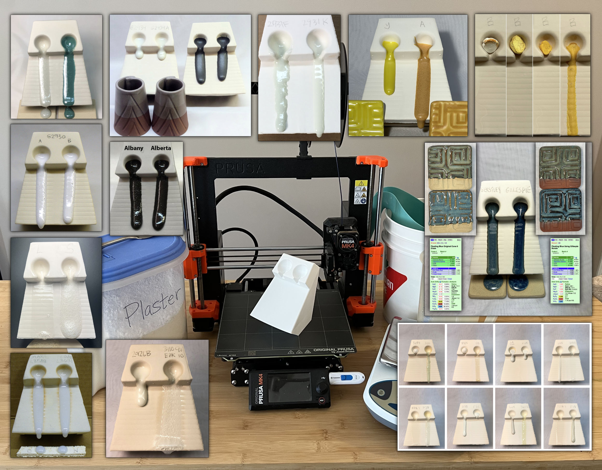
There are so many things a melt flow tester can tell you
For any potter or hobbyist, making your own molds and slip casting presents amazing options. Making this melt fluidity tester will get you started in 3D printing, pouring plaster to make a mold and slip casting. These will help you understand glazes, including commercial ones, much better.
Consider how these melt flow tests demonstrate performance: Is a new brand-name material the same (e.g. tin oxide, feldspar, dolomite, Alberta slip)? Does a glaze recipe pass a sanity check? Is a batch of frit bad? Is a frit better for sourcing B2O3 than Gerstley Borate? Is a glaze matte because it is not melting enough? Is a glaze too reactive? Is a manufacturer's claim correct? Will a stain or metal oxide addition make my glaze melt more or less? Does a material substitute work as well as the original? How does a frit soften and melt over a range of temperatures? Do glazes of the same chemistry but different recipe really melt the same? Is this glaze prone to bubbling? Does a glaze melt have high surface tension?
Here is what you need: A geeky family member having a 3D printer, a blender, powdered slip casting clay, deflocculant, plaster and a 2000g 0.1g scale. This page is the "Next" button to get started. Everything you need to know is here.
There are many complex and expensive instruments designed to observe and measure the goings-on in firing kilns. Generally this type of equipment is expensive and measures absolute physical properties that can be quantified easily. However glaze melt flow is like clay plasticity, it is more subjective and not so easy to quantify. It is best measured comparatively, that is, one specimen directly compared with another. That being said, each glaze does have a unique melt flow patterns over a range of temperatures, these can be like a finger print. Melt fluidity testing can be done using inexpensive methods and devices.
I would like to submit a general-purpose testing method for many glaze melt properties that is both inexpensive and easy to use: The GLFL test. So many factors related to the melting, solidification and physical properties and defects of fired glaze surfaces are related to melt viscosity. Thus a test that provides information about this has the potential of being very valuable.
Before going on, I will give credit where credit is due. This is not an original idea. I have seen this device described in industry literature to compare melt properties of nepheline syenite and feldspar. Also, I was sent a very nice dual-flow mold by Hugh Nile at Sterling China (it had the initials IMC embossed on it). I am aware that other industries also use similar devices. However I want to take it to the next level by clearing documenting its advantages and a procedure to use it.
I have made a rubber master mold of the one described herein and can making working molds for others. If you would like one please see the bottom of this article.
Testers that do not work well
Small or steep angle testers: Although I have messed with smaller sizes in the past I have now seen the light. They just do not work as well. You need a large enough reservoir, and long enough flow ramp at a shallow enough angle to get repeatable and sensitive tests.
Inclined tile testers: Some companies prepare a lump of the glaze to be tested and glue it to one end of a tile using a slurry made from the same material. While this will often work it is problematic with compounds that shrink a lot or those lacking dry hardness. The former could crack off and the latter may crumble off. I'll leave it to your imagination what might happen if pieces or the whole sample rolls into contact with a kiln element.
The Dual-Flow Large Tester
This is shown in the picture. It is 13.5cm high while standing (5.5 inches). The long runway is at less than a 45 degree angle for extra sensitivity (there are actually two orientations for two different angles). One of the big advantages of the dual tester is that it can be employed for side-by-side testing of two specimens (e.g. one alongside a benchmark). It is amazing how close you can match the melt fluidity of two materials using this method.
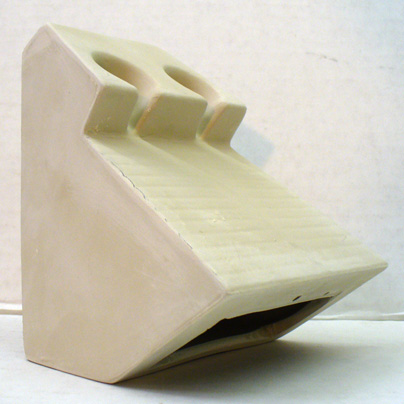
This device is cast in a plaster mold using a mix refractory enough to resist warping if walls are cast thin (in production situations flow testers should be made from the same clay that ware is made from but if such is too vitreous you can reduce the feldspar content somewhat. See below for more information on the slip recipe. I usually bisque fire these testers for extra strength. The reservoir accepts a 10-12 gram ball of material that you can just drop right in. These balls are easy to make by dewatering the glaze or material slurry on a plaster surface to the right working consistency and then rolling the ball in your hands, drying it and shaving material off to achieve the right weight. (thus the glaze does need to have enough plastic ingredients to enable this workability or you need to add some bentonite to impart it).
I have defined a procedure for this test in the testing area of this site. As noted in the procedure there, for repeatable results it is important that your testers be the same thickness, made from the same clay, fired at the same rate of rise and to the same temperature, and the ball sample must be the same dry weight each time.
In case you are not yet clear on how this tester is used: Two glazes are compared by dropping dried balls of each into the reservoirs at the top and the whole thing is fired to the desired temperature (with a tile below to catch any glaze that runs right off the end of the runway). During the firing, the glazes flow down the runway according to melt development, melt surface tension (and other factors like bubble development).
What this tester can show you about glazes:
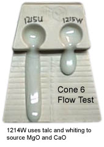
G1215U vs. G1215W glaze flow test
These recipes have the same chemistry but the 1215U uses frit to source the MgO and CaO. This demonstrates that it is not just chemistry that determines melt flow. Raw materials are crystalline and have different melting patterns than frits (which have already been melted and reground).
- If glaze ingredients shift in particle size or chemistry and thus change the melt, it will be immediately evident either by the flow reaching further down the runway or by a change in the character of the flow. This information is valuable in quality situations since it is so hard to guage glaze fluidity by simple observation of a normal thin layer on glazed ware or a test tile.
- Information from a flow tester is valuable when adjusting the recipe of a glaze for other things like thermal expansion, color, material substitution for no-longer-available materials, etc. while trying to maintain the same fluidity.
- This test helps to rationalize discrepancies between between what the chemistry of a glaze indicates should happen and what actually does happen in the melt. Often glazes of very similar chemistry will have different flow properties due to factors related to mineralogy and physical properties of materials. For example, the tester shown here is two glazes with the same chemistry, one sources CaO from calcium carbonate, the other from wollastonite.
- Often there is a need to maximize the amount of SiO2 in a glaze. For example, this test can demonstrate if changes made in the chemistry of a glossy glaze to reduce its thermal expansion also produce a more fluid melt. If so, the SiO2 can be increased, producing an even lower expansion. Likewise, this test will demonstrate if more silica can be tolerated if adjustments to produce more hardness also yield more fluidity.
- A flow test does not just show the degree to which the glass is melting, it also reveals the surface tension. Melts of high surface tension meet the tester are 90 degree angles whereas those of low surface tension spread out. The better the melting of a high surface tension glass the narrower the flow will be. In transparent glazes the flow will be white because it is not releasing the entrained bubbles. Very low surface tension melts meander down the runway in a thin layer. Knowing about this can really help analyze the cause of crawling, blistering and clouding problems.
- Ball milling time: By extracting samples from your mill at regular intervals, firing, and comparing the degree of flow you will be able to assess the mill's effect on glaze maturity and melt development.
- Because the glaze is so thick in a flow tester, bubbles resulting from products of decomposition within the glaze will be evident by the character of the thick flow and in the broken cross section (bubbles can even disrupt the melt flow).
- The glazes ability to wet the surface of the clay is evident by the angle at which the leading edge and sides of the flow meet the runway surface.
- These testers are great educational tools. This one, for example, shows the impact that a simple addition of opacifier has on glaze flow.
- Changes in properties like opacity or tendency to crawl, blister, pinhole, crystallize, craze or shiver, develop entrained bubbles or boron-blue clouding are often amplified by this test. The flow provides for an opportunity to see a very thick layer of your glaze and this can reveal differences not noted in thinner layers. Glazes which do not necessarily run on ware may run very badly on a flow tester, this indicates a lack of SiO2 and Al2O3 and is a warning for susceptibility to cutlery marking and leaching. Since so many glaze defects are either related to melt viscosity or revealed by a thick flow, monitoring this property is important.
- This device can even be used to help determine the optimal firing temperature, by experience you will know the fluidity of glazes that perform well. In addition firing a glaze in a flow tester at a range of temperatures may reveal that fluidity begins to increase more quickly through a narrow temperature range. After all, what is more significant to determine the freeze-point than flow of the glaze melt?
- This test is ideal for the development projects of under and overglaze colors. These need to be less fluid than glazes. Different stains require differing amounts of flux in the host to get the same degree of flow, using this type of test a line of products can be made that all have the same melt flow properties.
- The character of the melt flow, especially when compared over a range of temperatures, is unique to each frit. It is possible to identify them and even spot equivalent products from other manufacturers by using this test.

Raw Materials Testing
Most companies can readily test clay materials for use in bodies and glazes using physical testing methods that require a minimum of equipment. But it is not so obvious how to compare and test fluxing materials like feldspar for consistency. One can just trust the particle size and chemistry information provided by the manufacturer for each shipment and compare numbers. But what is the actual relationship between these numbers and the consistency of product on a production line? Can you trust the numbers anyway? The tester is an elegant simple alternative. It accurately shows melting power, color and impurities, you need to see two feldspars side-by-side to see how sensitive it is (see pictures at bottom for an example).
Product Development
Many ceramic products are tuned to melt to a certain extent to achieve their function. For example, an engobe needs to have a stiffer melt than a glaze, but much more maturity than the underlying body. Likewise, a ceramic printing ink must have a specific degree of melt fluidity, enough to adhere or melt to a smooth hard surface, but not so much as to bleed into the covering or underlying glaze. Melts used for bonding purposes likewise need to develop enough glass to bond, but not so much that fired geometry cannot be maintained. A standard and a test can be evaluated side-by-side using this tester. If the melt is not fluid enough, then it can be fired higher, or a percentage of frit can be added.
Taking Photos
Since these fired testers are quite large, storing them for future reference can be a problem. Taking a picture of them and scanning it onto the computer for archival purposes makes more sense. Make them at least twice as large as the ones shown here and they should still take less than 100kb of memory. You may find that making the testers from an off-white, grey or even tan body might be better to prevent washed-out results when taking photos. Also, have plenty of side lighting so that gloss is highlighted.
Slip Recipe
A good starting recipe is #L2540, it is 50% ball clay, 25% feldspar and 25% silica. This does not cast quickly but the pieces have good green strength and the clay will vitrify around cone 10-11. For a more refractory mix replace some of the feldspar with kyanite, calcined alumina or some other non-plastic high temperature material. You will need to know how to mix and deflocculate a clay slip, search in this library for the word "deflocculation" for an excellent article on understanding the casting slip mixing process.
Getting a Tester
We have provided detail pictures of our mold so you can make your own. We are planning to add 3D geometry to enable printing plastic shell molds for rubber masters (from which you can pour working plastic molds). The GBMF test is an alternative to this one, although not as accurate.
Related Information
Downloadable 3D model for melt flow tester block mold
Available on the Downloads page

This picture has its own page with more detail, click here to see it.
This is a 3D rendering of our melt fluidity tester. We have promoted this device for many years as an effective way to compare fired glaze properties (e.g. melt fluidity, surface tension, bubble retention, crystal growth, transparency, melting range, etc). Open the 3MF file in your slicer, move all pieces off the print bed and unselect them all. Then, print each part by moving it onto the bed and using place-on-face to orient it right. Print the funnel wide-side down with brim. Insert the natch clips and embeds into the holes, pour in the plaster, let it set and finally remove the PLA with a heat gun. You now have a working mold to make slip cast testers. Glue the natches and spacers into the embeds, strap the mold together, glue in the pour spout with slip and finish by filling the mold with slip. If the mold is dry, 10-15 minutes should be enough to get adequate thickness (don't make them too heavy). With 0.8mm thick walls, this drawing 3D prints quickly and is easy to remove when the plaster has set (using a heat gun). The halves interlock using natches (requiring our embeds and related parts). The mold halves can also be lined up by the outer edges before clamping them together (thus not requiring natches).
The 3D model of a new melt flow tester mold
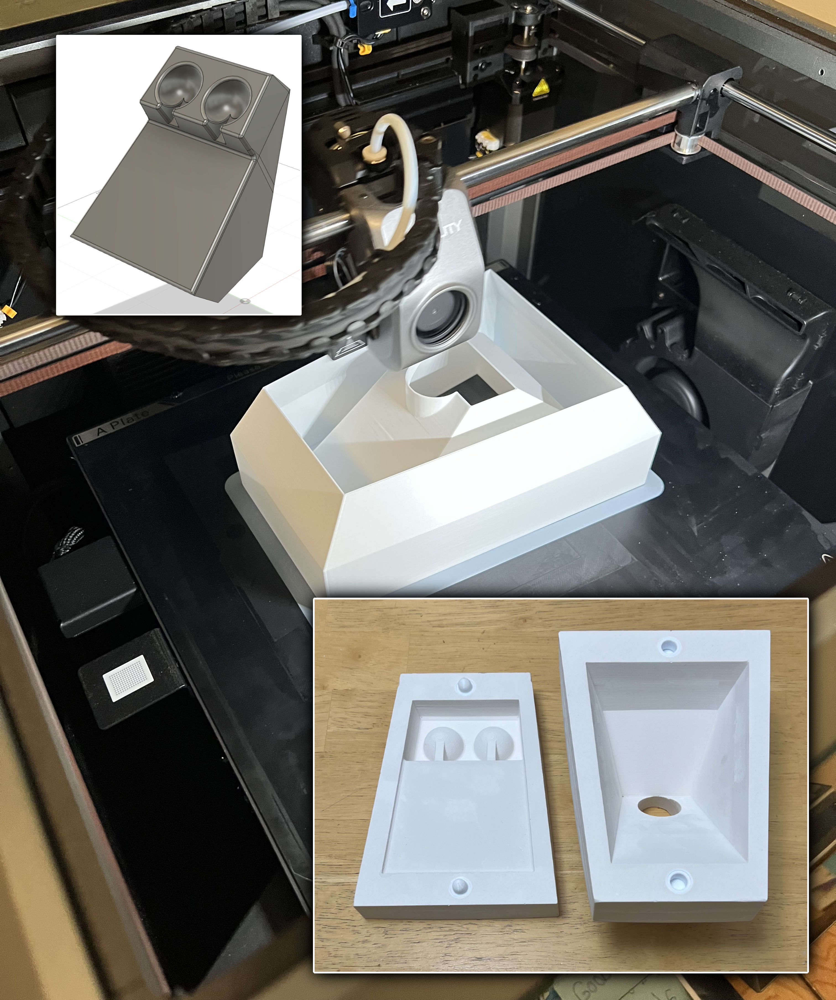
This picture has its own page with more detail, click here to see it.
The two pieces print as shown (top left). Since the walls are thin they may bulge a little when plaster is poured in, this is a trade-off for their light weight. The back section prints with no support, the front one needs support turned on. The file is in 3MF format, this enables including all pieces in one file (STL format does not permit that). All modern slicers can handle 3MF and they enable individually placing and orienting each piece (it is best to print them separately).
Plaster: Do not to forget to insert the clips and embeds into the holes before pouring the plaster. The mold volume is 1750cc. According to the https://plaster.glazy.org calculator, 1370g water and 1960g potters plaster are needed. You may like to mix 300:210g of plaster:water first (in a large paper cup) and pour that into the bottoms, this assures no leaking or deformation during the main pour.
Finish: Use a heat gun to peel off the PLA shell. Dry the mold and flatten the matting faces on sandpaper if needed. Then, insert the natches and spacers into the embeds. Strap the halves together, insert the pouring spout and pour in the casting slip (use a slip intended for the temperature you fire at).
Flow tester tells me if I have overfluxed the glaze
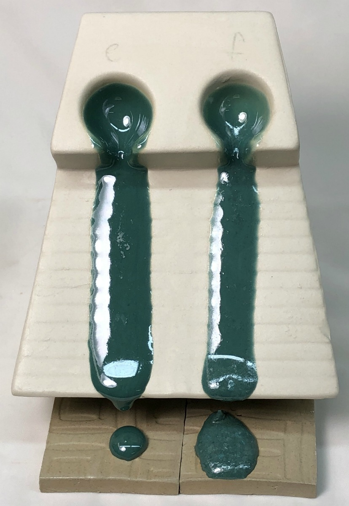
This picture has its own page with more detail, click here to see it.
This is important because I am searching for a balance between the degree of melt fluidity of my original crazing glaze but having a thermal expansion to fit my porcelain (this is G3806E and F). With each adjustment to the chemistry to drop the thermal expansion I do a firing to compare the melt fluidity with the previous iteration. On the right I have too much boron, it’s melting more than I want. And bubbling.
Feldspars, the primary high temperature flux, melt less than you think.
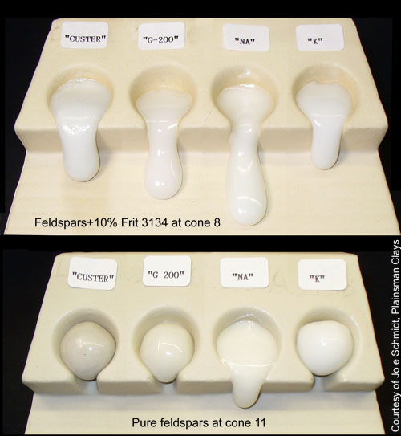
This picture has its own page with more detail, click here to see it.
Our melt fluidity tester is being used to compare cone 8 melt fluidities of Custer, G-200 and i-Minerals high soda and high potassium feldspars. Notice how little the pure materials are moving (bottom), even though they are fired to cone 11. In addition, the sodium feldspars move better than the potassium ones. But feldspars do their real fluxing work when they can interact with other materials. As a demonstration of that, note how well they flow with only 10% frit added (top), even though fired three cones lower.
How runs of Alberta Slip are compared in production testing

This picture has its own page with more detail, click here to see it.
These are two runs of Alberta slip (plus 20% frit 3134) in a GLFL test to compare melt flow at cone 6.
Melt fluidity of Albany Slip vs. Alberta Slip at cone 10R

This picture has its own page with more detail, click here to see it.
This is a GLFL test, it employs a slipcast melt flow tester to show the flow patterns of two glazes (or materials), side-by-side. Albany Slip was a pure mined silty clay that, by itself, melted to a glossy dark brown glaze at cone 10R. By itself it was a Tenmoku glaze at high temperatures. Alberta Slip is a recipe of mined clays with added refined minerals that give it a similar chemistry, firing behavior and raw physical appearance. As you can see, the melt fluidity is very similar.
Testing two brands of tin oxide in a melt flow tester

This picture has its own page with more detail, click here to see it.
This melt fluidity tester compares two different tin oxides in a cone 6 transparent glaze (G2926B). Opacifiers affect not just opacity in glazes, but also liquid properties of the melt. The length, surface character, opacity and color of these flows provide an excellent indication of how similar the two materials are. This is the GLFL test.
How to reverse-engineer a commercial transparent glaze
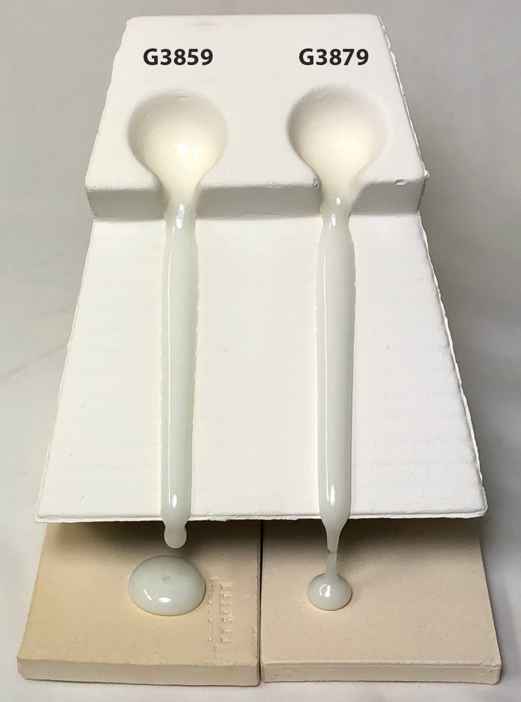
This picture has its own page with more detail, click here to see it.
The commercial cone 04 clear brushing glaze (on the left) works really well on our clay bodies so I sent it away to be analyzed (about $130). That revealed high Al2O3/SiO2 levels, this explains its resistance to crazing on our clay bodies and, even better, indicates high durability. In my account at insight-live.com I was able source the same chemistry from two Fusion frits (plus a little kaolin and silica). The melt fluidities are almost identical (my G3879 has a little more surface tension). I needed to make a dipping glaze version and chose a method that would produce a thixotropic slurry. One caution: An assay lab cannot analyze the complexities of a colored glaze, instead focus on the base clear and add stains to that. The first two-gallon bucket made saved the development cost plus more! And knowing the recipe made it possible to adjust for even lower thermal expansion. Another plus: I can now make my own low SG or high SG brushing version.
Cone 6 transparent way better without Gerstley Borate.
I surgically removed it to create G2926B!

This picture has its own page with more detail, click here to see it.
These are the original cone 6 Perkins Studio Clear (left) beside our fritted version (right). You cannot just substitute a frit for Gerstley Borate (GB), they have very different chemistries. But, using the calculation tools in my account at insight-live.com, I compensated for the differences by juggling other materials in the recipe. I even upped the Al2O3 and SiO2 a little on the belief they would dissolve in the more active melt the frit would create. I was right - a melt-flow GLFL test comparison (inset left) shows that the GB version flows less. Using this on ware exhibited another issue (after doing a IWCT test): Crazing. The very good melt flow on my G2926A fritted version is thus good news: It can accept more silica - the more silica, the more durable and craze resistant it will be. How much did it take? 10% more! That ultimately became the recipe for our standard G2926B cone 6 transparent.
Severe cutlery marking in a glaze lacking sufficient Al2O3

This picture has its own page with more detail, click here to see it.
The glaze is cutlery marking (therefore lacking hardness). Why? Notice how severely it runs on a flow tester (even melting out holes in a firebrick). Yet it does not run on the cups when fired at the same temperature (cone 10)! Glazes run like this when they lack Al2O3 (and SiO2). The SiO2 is the glass builder and the Al2O3 gives the melt body and stability. More important, Al2O3 imparts hardness and durability to the fired glass. No wonder it is cutlery marking. Will it also leach? Very likely. That is why adequate silica is very important, it makes up more than 60% of most glazes. SiO2 is the key glass builder and it forms networks with all the other oxides.
L3617 Cornwall Stone substitute vs. real Cornwall Stone
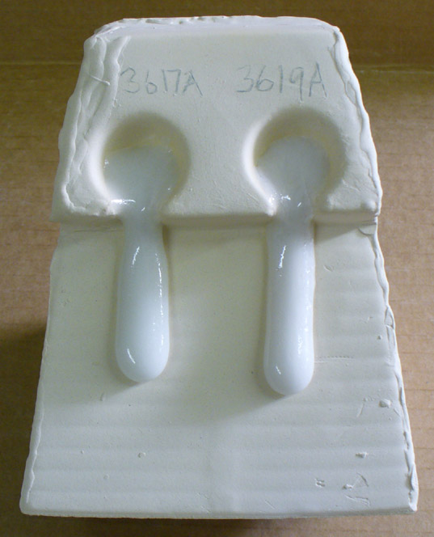
This picture has its own page with more detail, click here to see it.
This melt fluidity comparison demonstrates how similar the substitute L3617 recipe (left) is to the real material (right). 20% Frit 3134 has been added to each to enable better melting at cone 5 (they do not flow even at cone 11 without the frit). This substitute is chemically equivalent to what we feel is the best average for the chemistry of Cornwall Stone.
Forming a glaze into balls for melt fluidity testing

This picture has its own page with more detail, click here to see it.
The vast majority of glazes are somewhat plastic (but less than clay bodies). They can thus be dewatered on a plaster surface and formed. Why do this? To make 9-10 gram balls and fire them on flat tiles (or inclined flow testers) to see their melting characteristics. We call this the GBMF test, it is surprising how much it can tell you about a glaze or melting material. To make the ball, mix the slurry well and pour a little on the plaster. It should dewater in less than 30 seconds (although there are exceptions e.g. glaze with Gerstley Borate). As soon as the water sheen is gone, scrape it up with a rubber rib, hand-knead it and flatten it back down to dry a little more if needed (leave it only for five or ten seconds and rework it. Repeat until it is stiff enough to form balls of about 12 grams. Stamp them with ID numbers and dry them.
A bad batch of frit:
Glaze manufacturers must deal with this

This picture has its own page with more detail, click here to see it.
Frits are often viewed as chemically perfect manufactured materials. But they are actually among the most process-dependent ceramic powders I use. Frits are made of recipes that must be dosed, mixed, smelted, quenched and ground. Raw material consistency is under pressure these days. And carbonates, hydrates, borates, and nitrates, which off-gas during firing, must be converted into a homogeneous glass before quenching, theoretically leaving a glass of zero LOI.
Shown here is an example of a combination of improper mixing and inadequate smelting. This melt fluidity test compares the previous good shipment, A, with this faulty one, B. The B batch was not fully reacted during manufacture (as exhibited by the foam blanket on B). But there’s more: a glaze containing 50% of this had inadequate melting. That could be chemical drift, or, inadequate batch mixing. The latter seems most likely because B was from a full two-pallet batch (the likely capacity of their smelter), from which I tested a dozen bags. Tests showed the best results at the top of the first pallet and the worst at the bottom of the second.
Original flow tester measurements
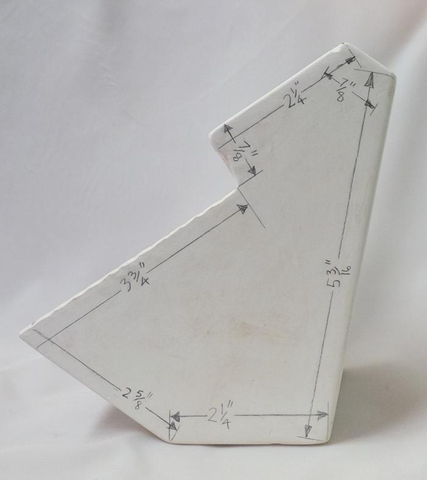
This picture has its own page with more detail, click here to see it.
Old three-piece glaze flow tester mold
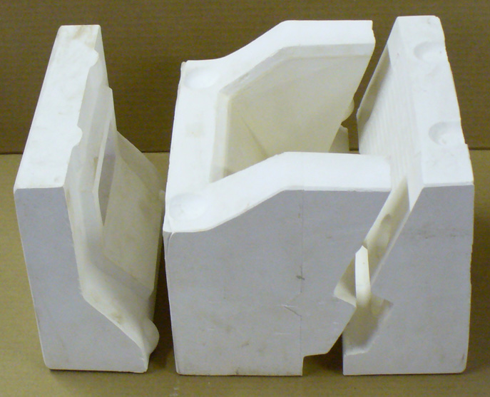
This picture has its own page with more detail, click here to see it.
These three plaster mold pieces were made manually by carving the original and casting each of these from that using clay, soap, cottle boards and clamps. Then negatives of each of these were cast using PMC-746 rubber. Plaster is then poured into each to make these working molds. This heavy mold was useful to produce large numbers of testers. But for a potter, hobbyist or educator it was serious overkill. Our new 3D printed version requires no clay, soap, cottle boards, clamps or even the third piece - just pour plaster into two 3D-printed shells.
There are so many things a melt flow tester can tell you
This picture has its own page with more detail, click here to see it.
For any potter or hobbyist, making your own molds and slip casting presents amazing options. Making this melt fluidity tester will get you started in 3D printing, pouring plaster to make a mold and slip casting. These will help you understand glazes, including commercial ones, much better.
Consider how these melt flow tests demonstrate performance: Is a new brand-name material the same (e.g. tin oxide, feldspar, dolomite, Alberta slip)? Does a glaze recipe pass a sanity check? Is a batch of frit bad? Is a frit better for sourcing B2O3 than Gerstley Borate? Is a glaze matte because it is not melting enough? Is a glaze too reactive? Is a manufacturer's claim correct? Will a stain or metal oxide addition make my glaze melt more or less? Does a material substitute work as well as the original? How does a frit soften and melt over a range of temperatures? Do glazes of the same chemistry but different recipe really melt the same? Is this glaze prone to bubbling? Does a glaze melt have high surface tension?
Here is what you need: A geeky family member having a 3D printer, a blender, powdered slip casting clay, deflocculant, plaster and a 2000g 0.1g scale. This page is the "Next" button to get started. Everything you need to know is here.
Flow tester model you can 3D-print yourself
Available on the Downloads page
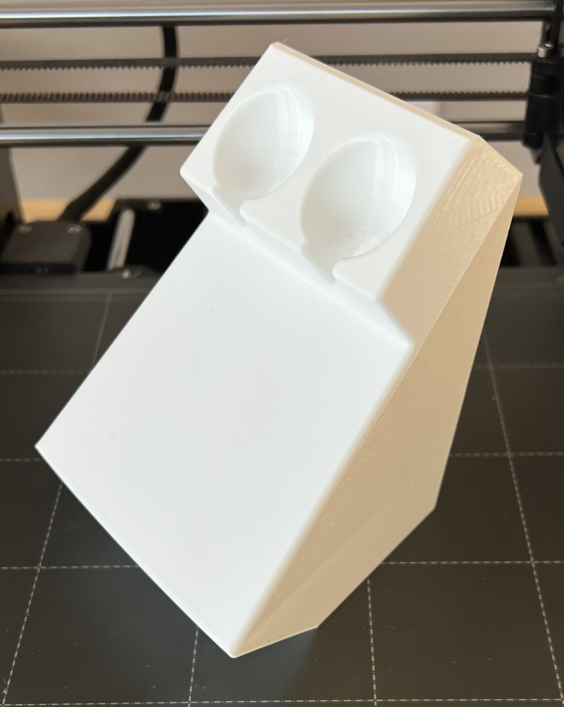
This picture has its own page with more detail, click here to see it.
This is not the mold, this is a model of what the mold enables you to make out of clay. Your printer should be able to make this with no support and no infill since there are no extreme overhangs (configure the slicer accordingly). This can be useful as a demonstration. It prints quickly and takes only 47g of PLA filament. It is 10% larger than fired testers will be.
Links
| Materials |
Feldspar
In ceramics, feldspars are used in glazes and clay bodies. They vitrify stonewares and porcelains. They supply KNaO flux to glazes to help them melt. |
| Tests |
Glaze Melt Flow - Runway Test
A method of comparing the melt fluidity of two ceramic materials or glazes by racing them down an inclined runway. |
| Tests |
Glaze Melt Fluidity - Ball Test
A test where a 10-gram ball of dried glaze is fired on a porcelain tile to study its melt flow, surface character, bubble retention and surface tension. |
| Articles |
Limit Formulas and Target Formulas
Glaze chemistries for each type of glaze have a typical look to them that enables us to spot ones that are non-typical. Limit and target formulas are useful to us if we keep in perspective their proper use. |
| Articles |
Reducing the Firing Temperature of a Glaze From Cone 10 to 6
Moving a cone 10 high temperature glaze down to cone 5-6 can require major surgery on the recipe or the transplantation of the color and surface mechanisms into a similar cone 6 base glaze. |
| Articles |
Low Budget Testing of Ceramic Glazes
There is more to glazes than their visual character, they have other physical properties like hardness, thermal expansion, leachability, chemistry and they exhibit many defects. Here are some simple tests. |
| Articles |
A Textbook Cone 6 Matte Glaze With Problems
Glazes must be completely melted to be functional, hard and strong. Many are not. This compares two glazes to make the difference clear. |
| Glossary |
Viscosity
In ceramic slurries (especially casting slips, but also glazes) the degree of fluidity of the suspension is important to its performance. |
| Glossary |
Melt Fluidity
Ceramic glazes melt and flow according to their chemistry, particle size and mineralogy. Observing and measuring the nature and amount of flow is important in understanding them. |
| Glossary |
Ceramic Stain
Ceramic stains are manufactured powders. They are used as an alternative to employing metal oxide powders and have many advantages. |
| Glossary |
Surface Tension
In ceramics, surface tension is discussed in two contexts: The glaze melt and the glaze suspension. In both, the quality of the glaze surface is impacted. |
| Projects |
Tests
|
| Projects |
Temperatures
|
| Projects |
Troubles
|
| Projects |
Frits
|
Video |
How I Developed the G2926B Cone 6 Transparent Base Glaze
How I found a pottery glaze recipe on Facebook, substituted a frit for the Gerstley Borate (using glaze chemistry), compared using a melt flow tester, added as much extra SiO2 as it would tolerate, and got a durable and easy-to-use cone 6 clear. |
 PayPal | No tracking, No ads, No paywall, No transient content! Just organized, concise information constantly updated and improved. Was this helpful? Consider supporting me. |
| By Tony Hansen Follow me on        |  |
Got a Question?
Buy me a coffee and we can talk 

https://digitalfire.com, All Rights Reserved
Privacy Policy